Decision overload
Too many offers, banners, and competing choices made the homepage noisy and hard to act on.
KFC UAE operates one of the highest-volume QSR digital ordering platforms in the Gulf region, serving millions of orders annually across delivery and self-pickup. By 2024, a declining app store rating and rising customer support volume around payment failures had made the ordering experience a business priority — not just a UX one.
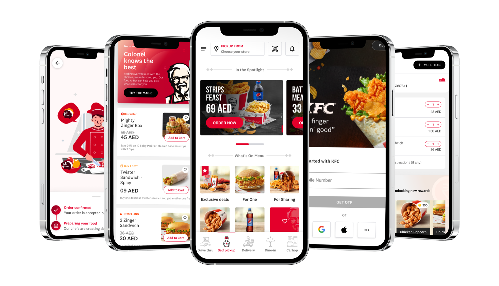
Team & my contribution
70% of users were reaching the homepage, but many never managed to place an order. The issue was not lack of intent — it was friction across selection, payment, and post-order confidence.
“Spent 30 mins to select the items and was still not able to place the order.”
User feedback
To understand the problem properly, we analysed the entire journey from landing on the homepage to placing an order. I combined heuristic evaluation, user reviews and feedback, and competitive analysis to identify where the experience was breaking.
A structured evaluation of the existing app against Nielsen's 10 usability heuristics, pinpointing where clutter, weak system status, and inconsistency were breaking the ordering journey.
Systematic coding of app store reviews to surface recurring complaints: payment failures, slow delivery tracking, confusing menu structure.
Heuristic audit of 8 leading QSR apps (Uber Eats, Zomato, Talabat, Deliveroo) to identify best practices in menu presentation, checkout design, and post-order reassurance.
Reviews also revealed a 3% post-order survey response rate — users were being asked for feedback days later via email, long after the experience had faded. This seeded the Step 4 intervention.
Audit of the old app experience to identify usability issues, inconsistency, clutter, and friction in the ordering journey. Three core issues surfaced:
Too many offers, banners, and competing choices made the homepage noisy and hard to act on.
Failed transactions, duplicate charges, and no clear confirmation of whether the order had gone through.
Without order tracking or status clarity, users were left anxious about delivery timing and progress.
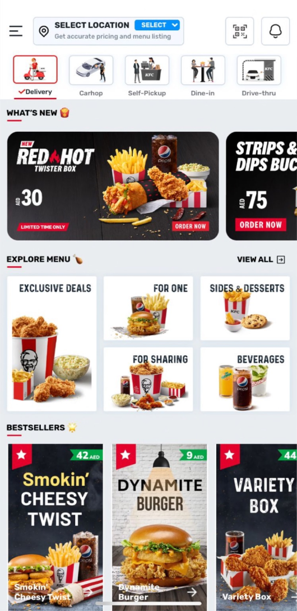
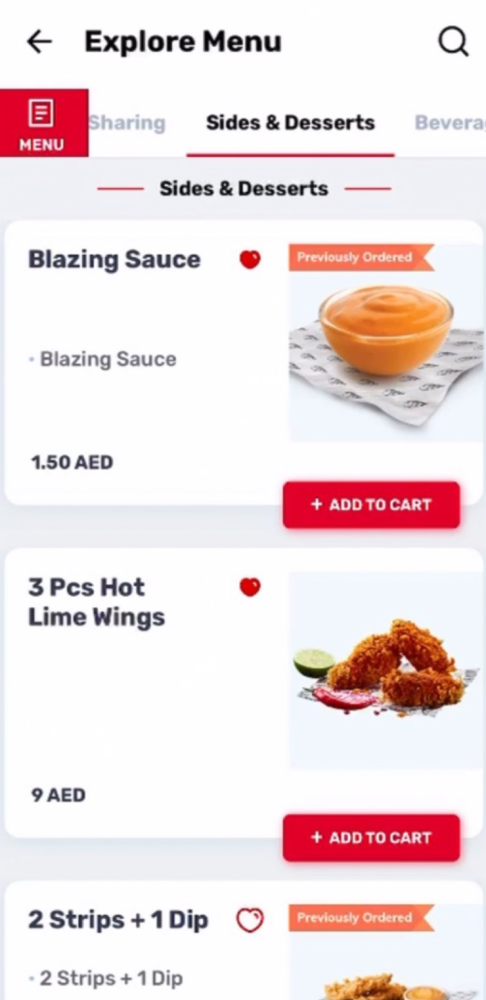
Reviews were grouped to uncover repeated complaints around payment failures, delivery delays, lack of tracking, and too many choices.
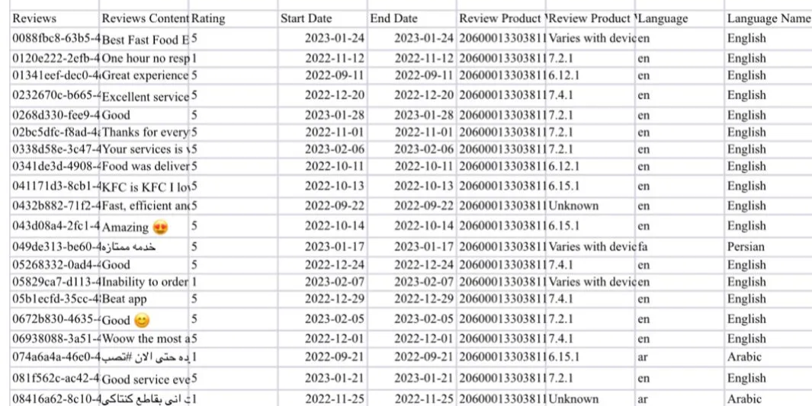

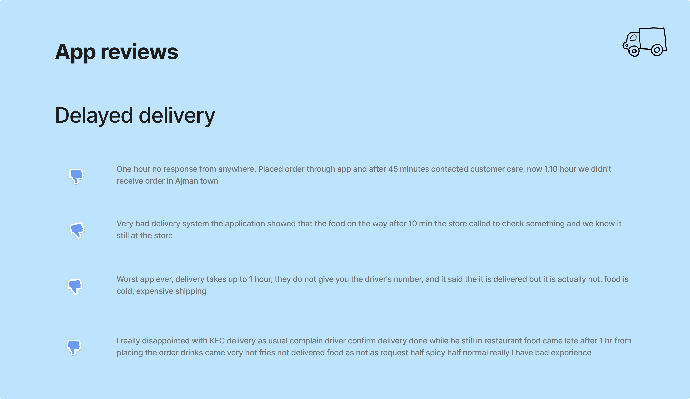
Benchmarking helped identify missed opportunities like real-time tracking, rating mechanisms, and stronger confidence cues.
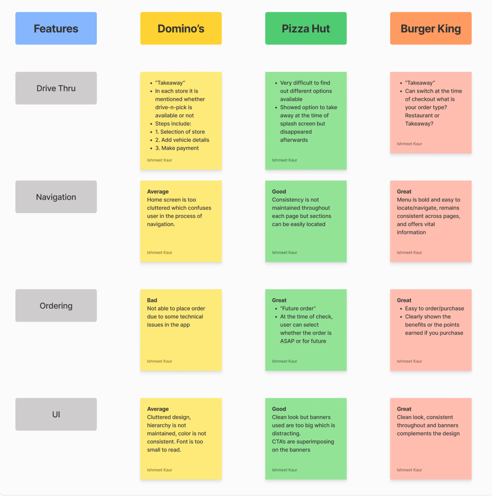
6 of Nielsen's 10 heuristics were violated, with "Visibility of system status" and "Aesthetic & minimalist design" scoring worst. The interface wasn't failing because of one problem — it was failing everywhere simultaneously. We used heuristic severity ratings to prioritise: payment/checkout first, menu second, homepage third.
3 in every 5 negative reviews mentioned payment failure or post-order anxiety — not menu confusion. We'd assumed the menu was the main issue, but the data said checkout trust was equally broken. That led directly to designing the 4-state order-tracking screen as a priority equal to the menu redesign, not a nice-to-have.
Every top-performing competitor offered real-time order tracking; KFC offered none. Talabat and Deliveroo both showed 4+ distinct order states. This confirmed post-payment silence was causing anxiety, not just poor UX preference. We adopted a 4-state model (Confirmed → Preparing → Out for Delivery → Arriving Soon) directly from this analysis rather than inventing a new pattern users would need to learn.

Reduced from 5 promotional banners and 12+ category tiles to a single hero zone with one clear CTA and 6 primary categories. Added a saved store feature for repeat customers (40% of users). Average time-to-first-tap dropped from 1m 10s to 22s.

Implemented sticky category tabs, a single-image item card (image, name, price), and moved customisation into a focused modal. Task completion time for adding 3 items to cart dropped from 4m 32s to 1m 45s.

Built a 4-state order tracking flow from scratch (Confirmed → Preparing → Out for Delivery → Arriving Soon) — a feature that didn't exist at all in the original app. This directly addressed the finding that 3 in 5 negative reviews mentioned post-payment anxiety. Support tickets related to order status uncertainty fell 47% in the first 60 days.
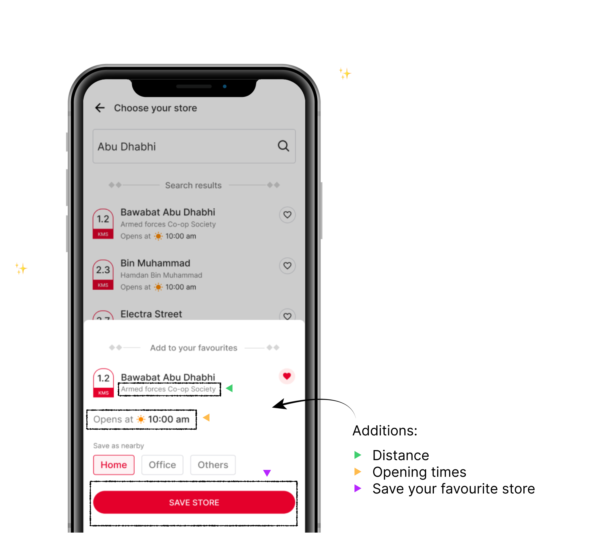
40% of users were repeat customers re-selecting the same store every visit. Surfacing the most-recent store with a one-tap save cut roughly 2 taps to reach the menu.
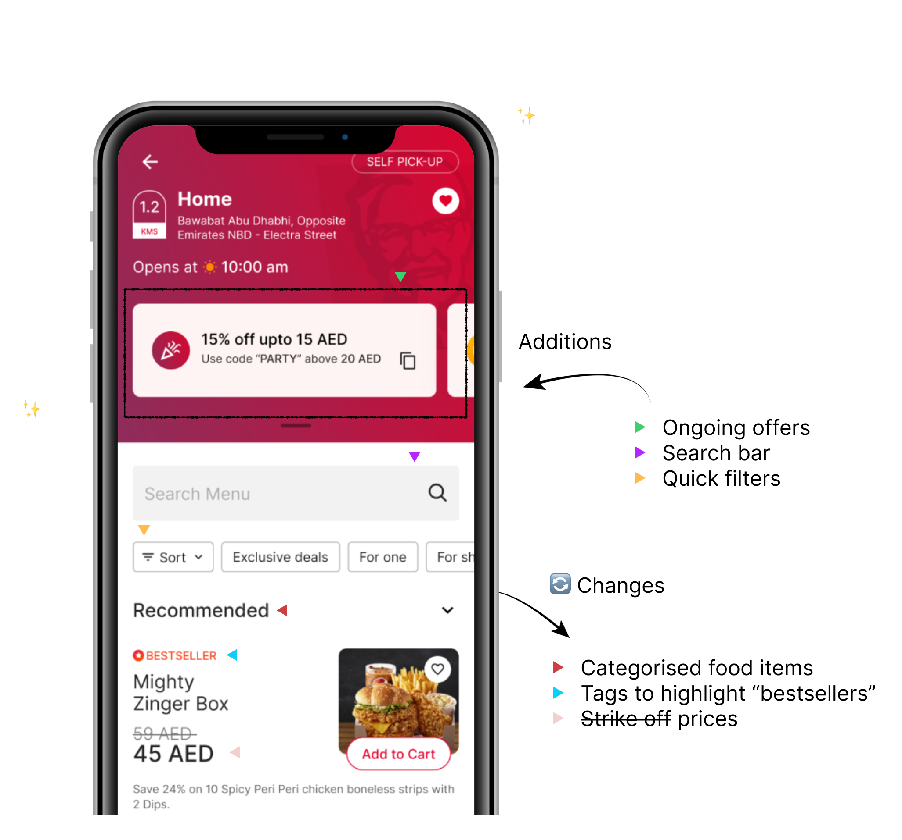
The old menu crammed 50+ items per screen. A clear hierarchy — image, bold name, prominent price — with customisation moved into a focused modal cut task time from 4m 32s to 1m 45s.
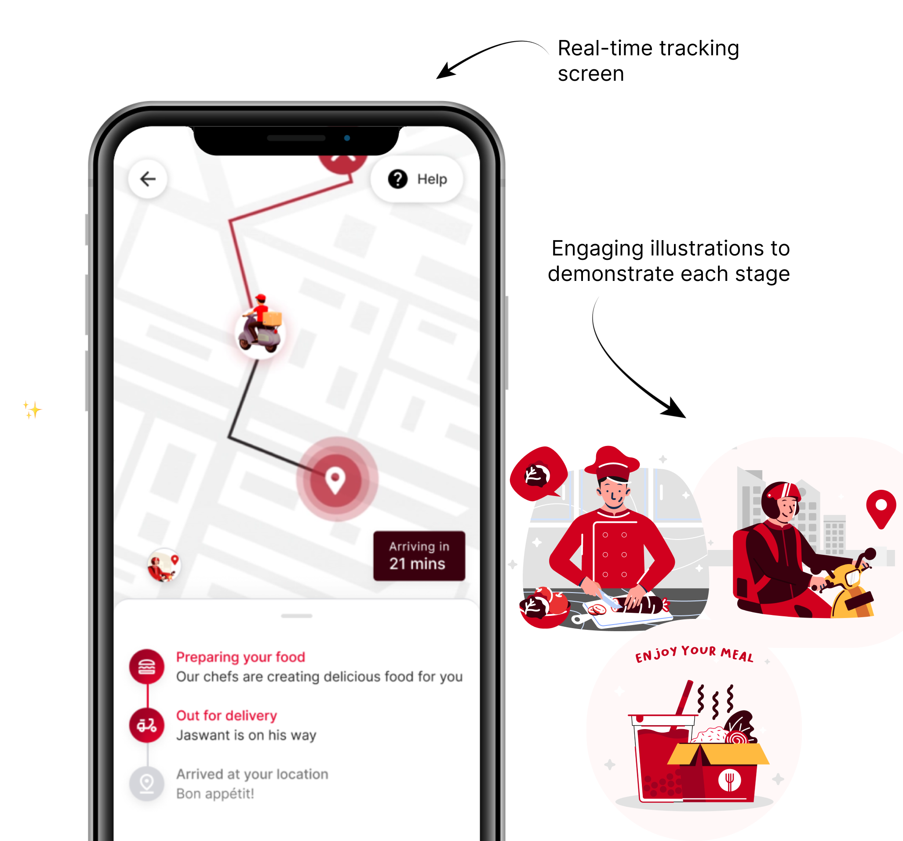
28% of negative reviews mentioned post-payment anxiety. Four clear order states (Confirmed → Preparing → Out for Delivery → Arriving Soon) with live ETAs took first-attempt completion from 3/10 to 9/10.
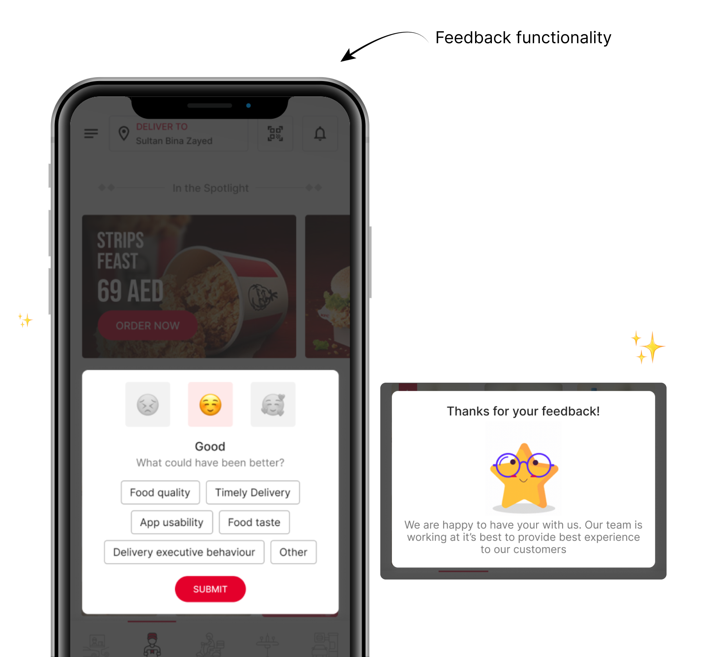
Email surveys sent days later were ignored (3% response). Moving a 2-question prompt to the order-complete screen lifted responses to 34%.
Usability testing figures are from validation sessions with 10 participants. NPS and support ticket data reflect the first 60 days post-launch on the live product.
Users who successfully placed an order on first attempt
Measured from homepage to order confirmation
Net Promoter Score, driven by post-order confidence
Users completing post-order flow without assistance
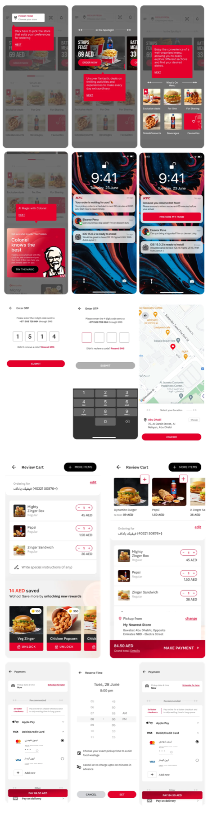
“Ishmeet is an excellent communicator with exceptional creativity and worked closely with design, development, and marketing teams to deliver real value.”
This project was transformational in how I approach payment-sensitive flows. I learned that anxiety after checkout isn't fixed by reassuring messaging alone—it's fixed by transparent system design. Users need to see their order transition through states. They need to know *why* each delay happens.